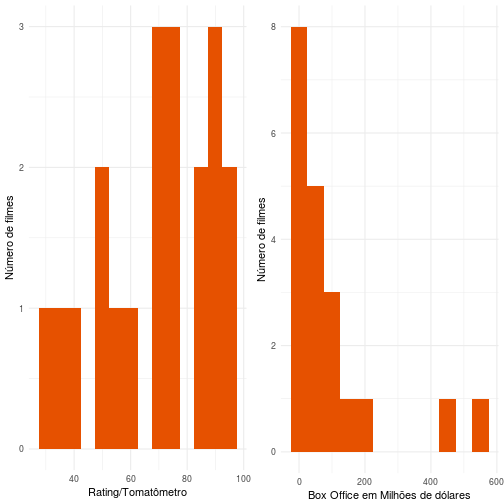
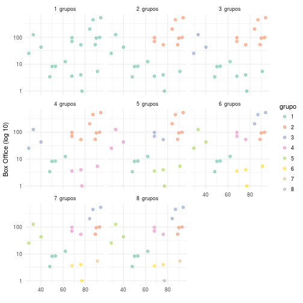
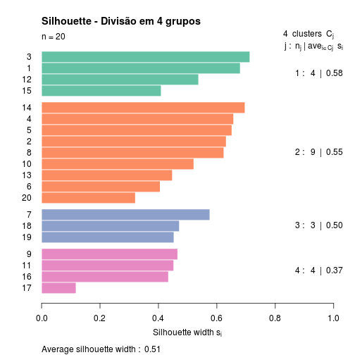

Agrupamento de filmes do Christian Bale
Conjunto de dados
“I’m Batman!”
Na análise de hoje buscaremos identificar quais os grupos de filmes do ator Christian Bale. Os grupos serão definidos quanto filmes de um mesmo grupo tem características semelhantes entre si mas que diferem de outros grupos.
Iremos utilizar os dados do Rotten Tomatoes, site conhecido mundialmente por seus reviews de filmes e pelo tomatômetro que é uma medida de 0 a 100 do nível de frescor ou podridão do tomate/filme. Foram coletados 20 filmes com informações sobre BOX OFFICE e RATING(Tomatômetro).
from_page <- read_html("https://www.rottentomatoes.com/celebrity/christian_bale/") %>%
html_node("#filmographyTbl") %>% # A sintaxe da expressão é de um seletor à lá JQuery: https://rdrr.io/cran/rvest/man/htmhttps://www.rottentomatoes.com/celebrity/denzel_washington/l_nodes.html
html_table(fill=TRUE) %>% # Faz parse
as.tibble()
filmes = from_page %>%
filter(RATING != "No Score Yet",
`BOX OFFICE` != "—",
CREDIT != "Executive Producer") %>%
mutate(RATING = as.numeric(gsub("%", "", RATING)),
`BOX OFFICE` = as.numeric(gsub("[$|M]", "", `BOX OFFICE`))) %>%
filter(`BOX OFFICE` >= 1) # Tem dois filmes que não parecem ter sido lançados no mundo todo
Variáveis
Iremos considerar duas variáveis para o agrupamento: BOX OFFICE que é a bilheteria nos EUA que o filme arrecadou, RATING que é o nível de frescor do tomate, 0 o tomate/filme está podre enquanto 100 o tomate/filme está fresco.
p1 <- filmes %>%
ggplot(aes(x = RATING)) +
geom_histogram(binwidth = 5, fill = "#E65100") +
labs(x = "Rating/Tomatômetro", y = "Número de filmes")
p2 <- filmes %>%
ggplot(aes(x = `BOX OFFICE`)) +
geom_histogram(binwidth = 50, fill = "#E65100") +
labs(x = "Box Office em Milhões de dólares", y = "Número de filmes")
grid.arrange(p1, p2, ncol=2)

Na primeira visualização vemos a maioria dos filmes de Bale tem bons indíces no tomatômetro embora ainda existam alguns que não são tão bons assim. Na segunda visualização percebemos que a maioria dos filmes encontra-se entre 0 e 200 milhões de dólares no Box Office e apenas dois filmes ultrapassam os 400 milhões de dólares.
filmes %>%
hchart("scatter", hcaes(x = RATING, y = `BOX OFFICE`)) %>%
hc_add_theme(hc_theme_smpl()) %>%
hc_title(text = "Rating vs Box Office", align = "center") %>%
hc_xAxis(title = list(text = "Rating (tomatômetro)")) %>%
hc_yAxis(title = list(text = "Box Office em Milhões de dólares")) %>%
hc_tooltip(pointFormat = "{point.TITLE} <br> Rating: {point.x} <br> Box Office: {point.y}")
Acima podemos observar que não existem uma correlaçao linear clara entre as duas variáveis. Ainda é possível identificar outliers como The Dark Knight e Dark Knight Rises, maiores Box Offices do ator, e Captain Corelli’s Mandolin e Terminator Salvation, menores Ratings do ator. Olhando para esse gráfico de dispersão é possível imaginar que alguns grupos poderão ser formados, por exemplo, existe um grupo que arrecadou “pouco” e tem um baixo índice no tomatômetro. É possível também visualizar um grupo de grandes sucessos em termos de crítica.
Agrupamento
Agora que conhecemos as variáveis e quais são alguns filmes que Christian Bale participou vamos agrupá-los da melhor forma de modo que que filmes parecidos entre si fiquem em um mesmo grupo e que esses grupos sejam diferentes entre si.
A técnica para o agrupamento usada é o agrupamento hierárquico, no qual na variável BOX OFFICE foi aplicada o log de 10, uma vez não estamos interessados nas diferenças absolutas das rendas dos filmes. Além disso, as duas variáveis foram padronizadas para uma mesma escala e com a mesma unidade (desvios-padrão). O método de distância utilizado foi o euclidean e o de agrupamento foi o ward.D.
agrupamento_h_2d = filmes %>%
column_to_rownames("TITLE") %>%
select(RATING, `BOX OFFICE`) %>%
mutate(`BOX OFFICE` = log10(`BOX OFFICE`)) %>%
mutate_all(funs(scale)) %>%
dist(method = "euclidean") %>%
hclust(method = "ward.D")
A função abaixo é responsável por plotar várias visualizações com n grupos diferentes.
plota_hclusts_2d = function(agrupamento,
dados_filme,
nome_colunas, # coluna usada para distâncias
dist_method = "euclidean",
linkage_method = "complete",
ks = 1:9){
#' Retorna um ggplot das soluções de agrupamento de `dados_filme`
#' para as quantidades de grupos em `ks` usando `hclust`.
library(ggplot2)
library(dplyr, warn.conflicts = F)
atribuicoes = tibble(k = ks) %>%
group_by(k) %>%
do(cbind(filmes,
grupo = as.character(cutree(agrupamento, .$k))))
atribuicoes %>%
ggplot(aes_string(x = nome_colunas[1], y = nome_colunas[2], colour = "grupo")) +
geom_jitter(width = .02, height = 0, size = 2, alpha = .6) +
facet_wrap(~ paste(k, " grupos")) +
xlab("") +
ylab("Box Office (log 10)") +
scale_color_brewer(palette='Set2') %>%
return()
}
Escolha dos grupos
Abaixo podemos visualizar como seria a divisão dos filmes em grupos considerando de 1 a 8 grupos distintos.
filmes2 = filmes %>% mutate(`BOX OFFICE` = log10(`BOX OFFICE`))
plota_hclusts_2d(agrupamento_h_2d,
filmes2,
c("RATING", "`BOX OFFICE`"),
linkage_method = "ward.D", ks = 1:8) + scale_y_log10()

Estamos visualizando a variável Box Office em escala de log pois não estamos interessados no valor absoluto da bilheteria em si mas na grandeza do quanto ela cresce com relação a outros filmes.
Optamos por escolher a divisão em 4 grupos por estar em conformidade com a ideia inicial ao observarmos o gráfico de dispersão dos filmes. Mais tarde vamos explorar melhor esses 4 grupos.
Silhouette
Uma visualização e métrica que usamos para escolher a divisão em 4 grupos é mostrada abaixo. Esse gráfico tem o objetivo de descrever quão parecidos são os componentes dentro de um grupo. O ideal é que todos os grupos tenham um valor de silhueta elevado.
distancias = filmes %>%
column_to_rownames("TITLE") %>%
select(RATING, `BOX OFFICE`) %>%
mutate(`BOX OFFICE` = log10(`BOX OFFICE`)) %>%
mutate_all(funs(scale)) %>%
dist(method = "euclidean")
colors <- brewer.pal(4, 'Set2')
plot(silhouette(cutree(agrupamento_h_2d, k = 4), distancias), col = colors, main = 'Silhouette - Divisão em 4 grupos')

Quanto maior é a medida da silhouette maior é a homogeneidade em um grupo, ou seja, os filmes de um grupo parecem mais com filmes do próprio grupo do que de outro grupo. A divisão em 4, é o máximo que podemos obter em termos da medida da silhouette e que faça sentido.
Outro fator importante que pode ser observado através desta visualização é o número de observações de cada grupo. Percebe-se a existência de um grupo maior com 9, dois com 4 filmes cada e um menor com 3 filmes.
Grupos de filmes de Christian Bale
Agora que já conhecemos as variáveis e já decidimos em quantos grupos os filmes de Christian Bale se dividem vamos rotular, entender e exemplicar os grupos definidos acima.
filmes_hclust <- filmes %>%
mutate(cluster = as.factor(cutree(agrupamento_h_2d, k=4)))
filmes_hclust %>%
mutate("boxoffice" = `BOX OFFICE`) %>%
hchart("scatter", hcaes(x = RATING, y = log10(`BOX OFFICE`), group = cluster)) %>%
hc_add_theme(hc_theme_smpl()) %>%
hc_title(text = "Rating vs Box Office", align = "center") %>%
hc_xAxis(title = list(text = "Rating (tomatômetro)")) %>%
hc_yAxis(title = list(text = "Box Office (log 10)")) %>%
hc_tooltip(pointFormat = "{point.TITLE} <br> Rating: {point.x} <br> Box Office: {point.boxoffice} <br> Ano: {point.YEAR}")%>%
hc_legend(title = list(text = "Grupo"), align = "right", verticalAlign = "top",
layout = "vertical", x = 0, y = 50)
Você está visualizando o eixo y (Box office) na escala de log 10 e não na escala original. Para saber o valor na escala original basta passar o mouse sobre o ponto.
Grupo 1 - Os Medianos
Esse é o grupo dos filmes que possuem o tomatômetro próximo a 50 %, ou seja não são frescos mas também não são podres. Em geral, os filmes desse grupo não obtiveram o sucesso desejado no BOX OFFICE como o esperado por seus produtores. Por exemplo, The New World teve um orçamento de 30 milhões de dólares mas só arrecadou nos EUA 12.5 milhões.
Grupo 2 - Os Grandes Sucessos
Nesse grupo estão presentes os filmes com maior bilheteria da carreira de Christian Bale, como A trilogia Batman e também os filmes mais aclamados pela crítica segundo o indíce do tomatômetro. Um filme bastante em que Bale é bastante conhecido por sua atuação brilhante é The Fighter, filme em que vive um irmão mais velho de um pugilista de boxe. Filme muito bom por sinal :).
Grupo 3 - Os Criticados famosos
Os integrantes desse grupo obtiveram altos índices de bilheteria mas não foram bem avaliados segundo o tomatômetro. Terminator Salvation é um exemplo disso, como é um filme da franquia Terminator (Exterminador do futuro) um grande hype havia na época, o que justifica a alta bilheteria embora o filme seja criticado até os dias de hoje, inclusive pelo próprio Arnold Schwarzenegger.
Grupo 4 - Os ótimos menores
Aqui estão presentes os filmes de arrecadaram relativamente pouco se comparado a outros filmes do ator, mas que obtiveram ótimos índices de aprovação no Rotten Tomatoes. Rescue Dawn, que conta a história de um piloto americano que é capturado por inimigos durante a Guerra do Vietnã é um exemplo de filme com um “baixo” mas que é excelente.
Essa foi a análise de hoje. Até a próxima !!!